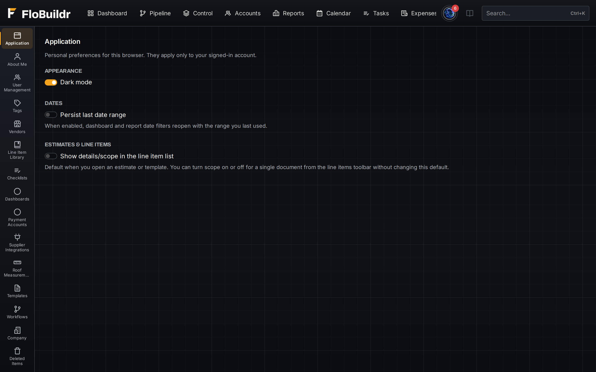
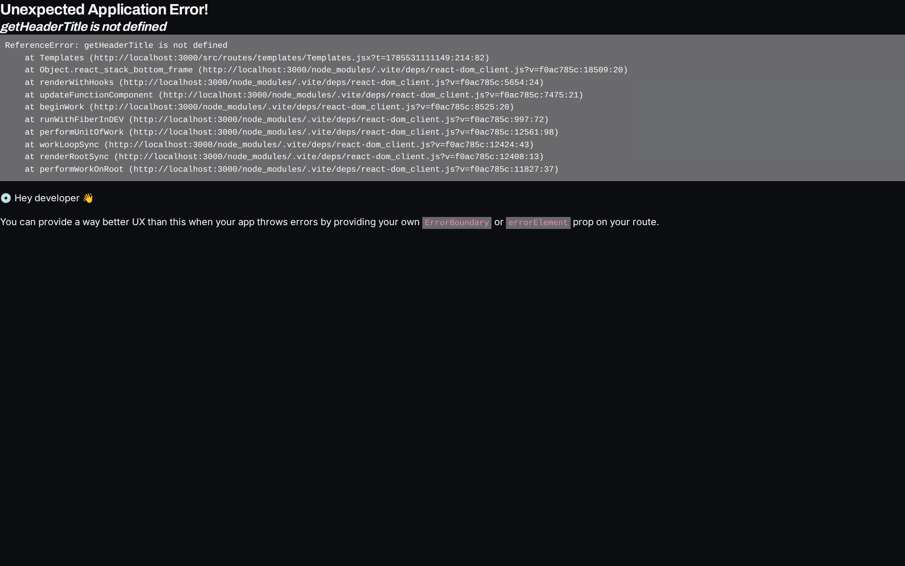

Workflows that send the follow-up so nobody has to remember to
Trigger emails or texts automatically when a stage changes or an estimate goes out, so a lead doesn't go cold waiting on a human to remember to follow up. Office texts and campaigns stay off personal phones.

Unlimited seats, with permissions that actually mean something
Assign roles with assigned-vs-all visibility, so an estimator sees their pipeline and a crew lead sees their jobs, not the whole company's numbers. Role simulation lets you check exactly what a login will see before you hand it out.

Templates so the office doesn't start from a blank document
Contract language, proposal sections, and document templates live in one library that every estimate and agreement can pull from. Update the wording once and every new job uses the current version.

Automation you build by drawing it
A workflow is one sentence: when this happens, if these things are true, do that, maybe after a wait. You build it on a visual canvas, dragging the trigger, the actions, and the branches, and wiring the arrows that set the order.
Triggers reach across the whole job: estimates sent, viewed, accepted, or rejected; job status, progress, and sentiment; worksheet lines assigned, rescheduled, or slipping past baseline; permits expiring; inspections passed or failed; punch items created or reassigned; email delivered or bounced. Conditions narrow them with equals, contains, greater than and less than, so a workflow only fires when it should. Actions send the email or text, create the task, change the status, assign the person, add the tag or the note.
Draft workflows never run, so you can build one safely and switch it on when you are ready. Every run is logged.
Protect your markup from your own team
Sales sees the contract value and what has been collected, and internal cost and margin stay hidden. Crew see the work they are assigned and no financial figures at all. Subcontractors get their execution and field reporting tabs and nothing else.
Permissions come in All and Assigned versions, so an estimator sees their own pipeline while the office sees everything, and Simulate Role lets an admin look at the app exactly as that person will before saving the change.